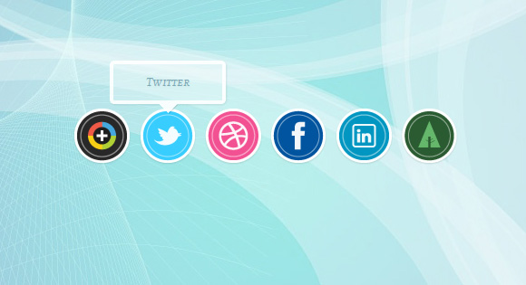
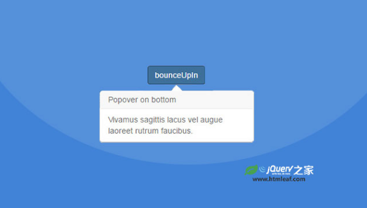

提示字元&字
-
HTML5跨瀏覽器純CSS工具提示特效
Pure-CSS-Tooltips是一款跨瀏覽器HTML5純CSS工具提示特效。該工具提示特效使用HTML5 data屬性和偽元素來將一个元素轉換為tooltip，不需要額外的HTML標籤和js代碼。 go -

js+css炫酷3d立體卡通文字特效
這是一款效果使用純js和CSS3製作的炫酷3D立體卡通文字特效。該特效通過js代碼來克隆字母的內容，並通過CSS text-shadow屬性和transform屬性將字母渲染為3D立體效果。 go -
 工具提示使用
如何使用CSS轉換和偽類來創建一些簡單的動畫後提示 go -
go -
 於velocity.js過渡動畫效果的Bootstrap模態窗口和Popover
這是一款基於velocity.js過渡動畫效果的Bootstrap模態窗口和Popover。該效果在Bootstrap模態窗口和Popover的基礎上，使用velocity.js來製作模態窗口和Popover打開時的動畫過渡效果。 go